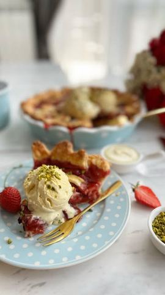

Moja beleška
SačuvanoSastojci
- Kora
- Jagoda nadev
- Dodatno, po želji
Priprema
+jedno belance za premazivanje pre pečenja Umesiti testo i podeliti ga na dva dela, umotati providnom folijom i ostaviti u frižideru na nekih sat vremena kako bi moglo da se razvije lagano i bez muke na pobrašnjenoj podlozi. Prvom polovinom prekrivate ivice i dno posude u kojoj ćete peći pitu, drugi deo možete razvući pa iseći na trakice, modlicom vaditi oblike i poredjati po želji. Jagode samo pospite šećerima, gustinom i cimetom, mrvicom soli i malo cenjenog limuna. Umešate lepo i izlijete u posudu preko testa. Poređate drugi deo testa preko i u zagrejanoj rerni prvih pola sata peći na 200C pa dodatno još pola sata prekriveno folijom na istoj temperaturi. Ovde najveću muku stvara činjenica da trebate ostaviti pitu da se potpuno ohladi kako bi mogli da je fino isečete i poslužite. Ukus je 🤤🤤🤤 Ljudi moji, vredi pripreme, budite sigurni 🍓🍓🍓
Originalni opis sa Instagrama
Američka pita sa jagodama 🍓🍓🍓 Dakle, mislila sam da bolje od kombinacije jabuka cimet ne može, ali morala sam je isprobati i sa najslađim jagodama, znate već koliko se sa njima teško opraštam 🥹🥹 Pita sa jagodama, sladoledom od vanile i malko topljene bele čokolade, maaaa 🤤🤤🤤🤤 Savršenstvo jedno 😍 Ovo je definitivno bio dezert vikenda, meseca.. ma ja ne znam, vredi svakog minuta pripreme ❤️ Kora: •300 gr mekog brašna + malo za posipanje •225 gr hladnog putera iseckanog na kockice •100 ml baš baš hladne vode •2 kašičice šećera •1/2 kašičice soli Jagoda nadev: •500 gr očišćenih i iseckanih 🍓 •70 gr belog šećera •70 gr braon šećera •40 gr gustina •kašičica cimeta •1/2 kašičice soli •2 kašičice soka od limuna +jedno belance za premazivanje pre pečenja Dodatno, po želji: •sladoled od vanile •malo topljene bele čokolade •sitno seckani postaći Umesiti testo i podeliti ga na dva dela, umotati providnom folijom i ostaviti u frižideru na nekih sat vremena kako bi moglo da se razvije lagano i bez muke na pobrašnjenoj podlozi. Prvom polovinom prekrivate ivice i dno posude u kojoj ćete peći pitu, drugi deo možete razvući pa iseći na trakice, modlicom vaditi oblike i poredjati po želji. Jagode samo pospite šećerima, gustinom i cimetom, mrvicom soli i malo cenjenog limuna. Umešate lepo i izlijete u posudu preko testa. Poređate drugi deo testa preko i u zagrejanoj rerni prvih pola sata peći na 200C pa dodatno još pola sata prekriveno folijom na istoj temperaturi. Ovde najveću muku stvara činjenica da trebate ostaviti pitu da se potpuno ohladi kako bi mogli da je fino isečete i poslužite. Ukus je 🤤🤤🤤 Ljudi moji, vredi pripreme, budite sigurni 🍓🍓🍓 Ko joj neće odoleti..? 🤗 • • • • • #pita #pitasajagodama #americkapita #americkapitasajagodama🥧 #idejezadezert #slatkisi #slatkirecepti #ukusnirecepti #jagode #vanila #belacokolada #mojirecepti #proverenirecepti #strawberrypie #deliciousfood